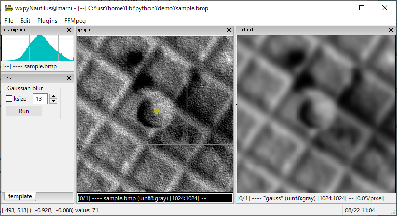

wxpyNautilus
Welcome aboard Nautilus! 1 This is a python package based on matplotlib/wxPython and wx.py.shell extension library.
The goal of our journey is the rapid development of image processing (using cv2/pillow) and the graphical user interfaces (using matplotlib/wxpython). To accomplish this, the framework consists of two main classes:
A plugin-style GUI mainframe
A Plugin means a python script file to process images, which user can load, edit, reload, unload, and debug without terminating the program.
An interactive shellframe
You can communicate with the main process using an interactive shell, inspect, test, and debug the code at runtime.

Getting Started
Prerequisites
Download the zip from this repository and extract it to a suitable directory.
Install
mwxlib.>>> pip install mwxlib
The mwxlib depends on the following packages:
wxPython (Phoenix) 2
matplotlib
numpy
pillow
opencv-python
Footnotes
- 1
“Nautilus” is named after my favorite novel 海底二万里 : Twenty Thousand Leagues Under the Seas written by Jules Verne.
- 2
For Python 3.6 – 3.9, wxpython >= 4.1.1 is required. For Python 3.10, wxpython >= 4.2.0 is required. You can download the latest snapshot from https://wxpython.org/Phoenix/snapshot-builds/.